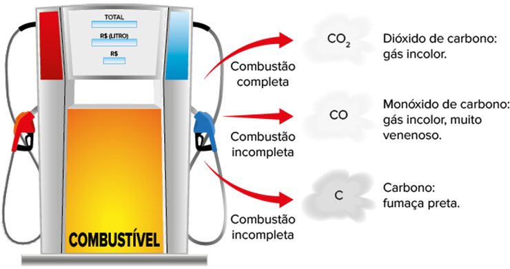

A água é tratada para que fique adequada ao consumo humano, passando por diversas reações químicas no processo.
tuachanwatthana/iStockphoto.com
A água é o constituinte mais abundante da Terra e o ingrediente essencial da vida. Aproximadamente 70% da superfície terrestre encontram-se cobertos por água. No entanto, menos de 3% do volume da água existente são de água doce, cuja maior parte está concentrada em geleiras polares e neves nas montanhas, restando uma pequena porcentagem de águas superficiais disponíveis para uso no planeta.
[...]
A água deve ser tratada para eliminar qualquer tipo de contaminação e para evitar a transmissão de doenças, tornando-a potável. O tratamento da água é importante porque, em função do aumentoda poluição e do aumento da população, que trouxe como consequência o aumento do consumo, há necessidade de remoção de contaminantes para que a água disponível possa ser usada para consumo humano. A remoção desses contaminantes se dá por intermédio de tratamentos específicos. O tratamento consiste em um conjunto de procedimentos físicos e químicos para que a água fique em condições adequadas para ser consumida. [...]
“Tratamento de água”. Conselho Regional de Química – IV Região, 28 jun. 2011.Disponível em: <www.crq4.org.br/quimicaviva_tratamento_agua>. Acesso em: 30 jul. 2021.
- O ácido sulfúrico é formado por poluentes que contêm enxofre em uma reação com etapa única?
- Podemos armazenar uma solução de ácido clorídrico em um recipiente de zinco?
Neste capítulo serão abordadas as habilidades EM13CNT104 , EM13CNT105 , EM13CNT205 , EM13CNT206 e EM13CNT302
Reações químicas
Já estudamos os fenômenos físicos e químicos. Um fenômeno físico é uma transformação que não altera a natureza da matéria, por exemplo, as mudanças de estado físico que ocorrem com a água na forma sólida (gelo) até sua evaporação ou, ainda, quando amassamos um papel ou quando adicionamos açúcar para adoçar um suco. Já um fenômeno químico é uma transformação na qual ocorre alteração da natureza da matéria. Podemos observar alguns exemplos nas imagens a seguir.
cegli/iStockphoto.com
anankkml/iStockphoto.com
diego_cervo/iStockphoto.com
Exemplos de fenômenos químicos: A. amadurecimento de um fruto; B. queima de um pedaço de papel; e C. dissolução de um comprimido efervescente em água.
Em uma reação química, temos um rearranjo de átomos, que produzirão moléculas diferentes, maiores ou menores que as originais. As reações químicas são representadas por equações químicas e têm sempre dois membros, denominados reagentes e produtos , sendo cada substância participante representada por sua fórmula química.
Genericamente, teremos a equação representada por:
Já estudamos diversas reações químicas, como as reações de neutralização, que ocorrem entre ácidos e bases, formando sal e água. Vamos relembrar essa reação utilizando o ácido sulfúrico e o hidróxido de potássio:
Ocorreu uma reação de neutralização total do ácido com a base, formando um sal neutro. Nesta unidade, vamos aprender que essa reação pode ser classificada também como uma reação de dupla‑troca, pois duas substâncias compostas (o ácido e a base) reagiram e formaram outras duas substâncias compostas (o sal e a água). Note que a reação está devidamente balanceada com os menores coeficientes inteiros possíveis.
Junto à fórmula da substância presente na equação, é comum indicarmos o estado físico da substância ou o meio em que se encontra, sendo: (s)
Uma equação química pode ser devidamente balanceada utilizando coeficientes em forma de fração ou os menores valores inteiros . Assim, fique atento ao enunciado da questão, pois alguns solicitam que o balanceamento seja feito com os menores coeficientes inteiros.
Para a reação de queima do magnésio, por exemplo, há duas possibilidades de balanceamento:
2 Mg(s)
Os nossos sentidos percebem a ocorrência de uma reação química quando notamos:
- mudança de cor;
- formação de precipitado;
- mudança de temperatura;
- liberação de gases.
Vamos estudar os tipos de classificação de reações inorgânicas a seguir.
Reações de síntese (adição, formação ou combinação)
Quando dois ou mais reagentes se combinam formando um único produto, temos uma reação chamada de síntese. Outros nomes também usados são: adição, formação ou combinação. Podemos generalizá-las por A
Observe alguns exemplos:
4 A
Mg(s)
O ácido sulfúrico, por exemplo, presente na chuva ácida é obtido por meio de três reações de síntese. Cada reação representa uma etapa do processo, que inicia com o enxofre, na forma de óxidos, lançado na atmosfera pelos veículos automotores movidos por combustíveis derivados do petróleo. Esses óxidos derivados do enxofre são formados durante a queima dos combustíveis, uma vez que o enxofre está presente como impureza; ao ser queimado (sofrer reação de combustão), o enxofre se transforma em SO2, agravando ainda mais o problema da formação da chuva ácida. Podemos equacionar as reações por etapa e ao final somá-las, obtendo, assim, a equação global, eliminando os compostos intermediários (compostos que aparecem como produto de uma equação e reagente da outra equação):

A queima do magnésio ocorre com emissão de luz.
Juliana Rovere
Podemos ainda classificar as reações de síntese em dois tipos:
- • Síntese total: quando todos os reagentes são substâncias simples.
- • Síntese parcial: quando pelo menos um dos reagentes não é mais uma substância simples.
Exemplo:
Exemplo:
1
Unicamp-SP 2017 Uma das alternativas para o tratamento de lixo sólido consiste na tecnologia de reciclagem quaternária, em que o lixo sólido não perecível é queimado em usinas específicas. Nessas usinas, os resíduos oriundos da queima são retidos e não são emitidos diretamente para o meio ambiente. Um dos sistemas para retenção da parte gasosa dos resíduos apresenta um filtro que contém uma das seguintes substâncias: Na2CO3, NaOH, CaO ou CaCO3.
- Considere a seguinte afirmação: essa tecnologia apresenta dupla vantagem porque, além de resolver o problema de ocupação do espaço, também gera energia. Responda, inicialmente, se concorda totalmente, concorda parcialmente ou se discorda totalmente dessa afirmação e, em seguida, justifique sua escolha.
- Durante a queima que ocorre no tratamento do lixo, os seguintes gases podem ser liberados: NO2, SO2 e CO2. Escolha um desses gases e indique um filtro adequado para absorvê-lo, dentre as quatro possibilidades apresentas no enunciado. Justifique sua escolha utilizando uma equação química.
Resolução:
- Concorda-se parcialmente, pois, como se trata de uma reação exotérmica, haverá geração de energia, que pode ser utilizada em uma termelétrica. No entanto, serão produzidos e retidos resíduos sólidos, e haverá a necessidade de descarte ou reutilização, não resolvendo o problema por completo.
- Os gases liberados durante a queima do lixo são óxidos ácidos, que reagem com substâncias de caráter básico. Dentre as quatro possibilidades apresentadas no enunciado, pode-se escolher como filtro adequado NaOH (base) e
CaO (óxido básico). Ao optar pelo gás CO2, uma possível reação pode ser equacionada por CaO(s)
+ CO2(g)➝ CaCO3(s), uma reação do tipo síntese.
Reações de análise ou decomposição
Quando um único reagente é decomposto em dois ou mais produtos, temos uma reação chamada de decomposição ou análise. Podemos generalizá-las por AB
Observe alguns exemplos:
Essas reações podem ser de três tipos, de acordo com o fator externo que causou a quebra:
- Pirólise: quando se utiliza calor para que haja a decomposição (do grego
piro
= fogo; lise= quebra). Costuma-se indicar a ação desse fator externo com o símboloΔ acima da seta. Nas indústrias, esse tipo de reação é chamado de calcinação. - Eletrólise: quando se utiliza eletricidade para que haja a decomposição. Costuma-se indicar a ação desse fator externo com o símbolo i, que representa a intensidade da corrente elétrica, acima da seta.
- Fotólise: quando se utiliza a luz para que haja a decomposição. Costuma-se indicar a ação desse fator externo com o símbolo
λ (lê-se “lambda”) acima da seta.
Exemplo:

Exemplo:
Exemplo:

Decomposição da água oxigenada
A catalase, também denominada hidroperoxidase, é uma enzima (proteína que catalisa reações químicas). Ela é encontrada na maioria dos organismos e tem como função decompor o peróxido de hidrogênio (H2O2).
Objetivo
Analisar a ocorrência de uma reação química, mais precisamente uma reação de decomposição, como também a função dos catalisadores.
Materiais
- 1 batata (sem casca);
- 1 tubo de ensaio (ou recipiente de vidro transparente);
- água (70 mL);
- água oxigenada (10 mL);
- funil;
- liquidificador.
Procedimento experimental
- Triture a batata no liquidificador com 35 mL de água para facilitar o processo.
- Filtre a mistura e reserve o filtrado (solução límpida).
- Despeje 3 mL da solução obtida em um tubo de ensaio contendo 5 mL de água oxigenada e observe.
- Repita a etapa anterior com o tubo de ensaio mergulhado em água quente (50
° C).
1
O que você observou após despejar a solução obtida em água oxigenada?
2
Qual a reação de decomposição da água oxigenada?
3
Por que a reação ocorreu instantaneamente?
4
O que você observou após despejar a solução obtida em água oxigenada aquecida a 50 °C?
Reações de simples troca (deslocamento, substituição)
Quando há uma substância simples e uma substância composta nos reagentes e ocorre uma reação formando outra substância simples e outra composta nos produtos, temos uma reação chamada de simples troca, também denominada deslocamento ou, ainda, substituição. Podemos generalizá-las por
Observe alguns exemplos:
Para que a reação de simples troca ocorra, a substância simples deve ser mais reativa do que o elemento químico que ela quer deslocar (substituir) presente na substância composta. A reatividade é a capacidade que um elemento químico tem de deslocar outro em uma reação de deslocamento. Assim, para descobrir quais serão os produtos formados devemos observar se a substância simples é um metal ou um ametal; um membro de uma fila nunca deslocará um membro de outra fila. Vamos analisar cada caso.
Sódio metálico em água forma hidróxido de sódio e gás hidrogênio, sendo que este último, em contato com o oxigênio do ar, entra em combustão, o que é evidenciado pela forte luminosidade e pelo aumento da temperatura do sistema.
Albert Russ/Shutterstock.com
Reações de deslocamento envolvendo metais
Para metais, a reatividade se baseia na fila de eletropositividade, como apresentado a seguir.
Analisando a fila, podemos concluir que o ouro (Au) é o metal de menor reatividade , logo, apresenta a maior nobreza . A reatividade é o oposto da nobreza.
Generalizando esse tipo de reação, o metal (substância simples, representado por A) tenderá sempre a deslocar outro metal (representado por B na substância composta) ou o hidrogênio – que aparece na fila de reatividade dos metais e dos ametais.
Logo, nesse tipo de reação, teremos:
metal 1
metal
Vamos analisar algumas equações:
I
A reação ocorre, pois o zinco (Zn) é mais reativo que o cobre (Cu) e, por isso, consegue deslocá-lo.
II
A reação não ocorre, pois o cobre é menos reativo que o zinco.
Reações químicas que envolvem íons em solução aquosa são comumente representadas por sua equação iônica . Vamos analisar esse tipo de reação utilizando novamente zinco metálico e a solução de sulfato de cobre(II).
O zinco metálico (Zn) presente na placa é mais reativo que o cobre presente na solução do béquer I. Assim, ocorre uma reação de deslocamento, levando ao descoramento da solução, que adquire agora uma cor azul mais suave, e ao depósito de cobre na placa, representado no béquer II. Note que os íons SO4 2 2 não participam, de fato, da reação e são considerados íons espectadores , não havendo assim a necessidade de colocá-los na equação química.
1
Unicamp-SP 2017 Uma das alternativas para o tratamento de lixo sólido consiste na tecnologia de reciclagem quaternária, em que o lixo sólido não perecível é queimado em usinas específicas. Nessas usinas, os resíduos oriundos da queima são retidos e não são emitidos diretamente para o meio ambiente. Um dos sistemas para retenção da parte gasosa dos resíduos apresenta um filtro que contém uma das seguintes substâncias: Na2CO3, NaOH, CaO ou CaCO3.
- Considere a seguinte afirmação: essa tecnologia apresenta dupla vantagem porque, além de resolver o problema de ocupação do espaço, também gera energia. Responda, inicialmente, se concorda totalmente, concorda parcialmente ou se discorda totalmente dessa afirmação e, em seguida, justifique sua escolha.
- Durante a queima que ocorre no tratamento do lixo, os seguintes gases podem ser liberados: NO2, SO2 e CO2. Escolha um desses gases e indique um filtro adequado para absorvê-lo, dentre as quatro possibilidades apresentas no enunciado. Justifique sua escolha utilizando uma equação química.
Resolução:
- Concorda-se parcialmente, pois, como se trata de uma reação exotérmica, haverá geração de energia, que pode ser utilizada em uma termelétrica. No entanto, serão produzidos e retidos resíduos sólidos, e haverá a necessidade de descarte ou reutilização, não resolvendo o problema por completo.
- Os gases liberados durante a queima do lixo são óxidos ácidos, que reagem com substâncias de caráter básico. Dentre as quatro possibilidades apresentadas no enunciado, pode-se escolher como filtro adequado NaOH (base) e
CaO (óxido básico). Ao optar pelo gás CO2, uma possível reação pode ser equacionada por CaO(s)
+ CO2(g)➝ CaCO3(s), uma reação do tipo síntese.
2
Em uma aula no laboratório de química, um estudante colocou um fio de cobre em uma solução de nitrato de prata (situação A) e, após alguns minutos, observou a formação de prata metálica ao redor do fio de cobre (situação B), além da mudança na coloração da solução para um tom azulado
Turtle Rock Scientific/
Science Source/Fotoarena
- Escreva a equação química devidamente balanceada ocorrida no experimento do estudante.
- Classifique essa reação de acordo com o seu tipo e explique a mudança de coloração observada na solução.
Resolução:
- Cu(s)
+ 2 AgNO3(aq)➝ 2 Ag(s)+ Cu(NO3)2(aq) - É uma reação de deslocamento, pois uma substância simples reagiu com uma substância composta e formou outras duas substâncias, sendo uma simples e a outra composta. Houve mudança na coloração da solução, pois o cobre presente no fio foi deslocado para a solução, formando nitrato de cobre, de coloração azul.
Reações de deslocamento envolvendo ametais
Para ametais, a reatividade se baseia na fila de eletronegatividade, a seguir discriminada:
Analisando a fila, podemos concluir que o flúor (F) é o ametal de maior reatividade , logo, apresenta a maior eletronegatividade .
Generalizando esse tipo de reação, o ametal (substância simples, representado por A) tenderá sempre a deslocar outro ametal (representado por C na substância composta) ou o hidrogênio – que aparece na fila de reatividade dos metais e dos ametais.
Logo, nesse tipo de reação, teremos:
ametal 1
Vamos analisar algumas equações:
A reação ocorre, pois o bromo (Br) é mais reativo que o iodo (I), deslocando-o.
A reação não ocorre, pois o iodo é menos reativo que o bromo.
Nessas reações de deslocamento por ametais, quando se forma o gás cloro, este apresenta cor amarela-esverdeada; quando temos a formação do bromo, este é um líquido castanho; e, quando temos a formação de iodo, este é um sólido acinzentado. Quando esses ametais são dissolvidos em tetracloreto de carbono ou benzeno, os produtos gerados apresentam coloração amarela, castanha e violeta, respectivamente.
Reações de dupla-troca (ou dupla substituição)
Quando duas substâncias compostas reagem formando duas outras substâncias compostas nos produtos, temos uma reação de dupla-troca ou dupla substituição.
Podemos generalizá-las por AB
O cátion de uma substância composta interage com o cátion da outra substância composta e vice-versa. Nesse tipo de reação, podemos encontrar como reagentes:
ácido
ácido 1
base 1
sal 1
Observe alguns exemplos:
Existem critérios a serem cumpridos para que a reação de dupla-troca ocorra, assim como estudamos nas reações de deslocamento. Deve-se cumprir ao menos um dos critérios: formação de um precipitado; formação de um composto menos ionizado; formação de uma substância volátil.Vamos analisar cada um deles a seguir.
Formação de precipitado
Um precipitado é uma substância insolúvel.
As bases formadas por metais da família IA e pelo íon amônio (NH41) são solúveis; as formadas pelos metais da família IIA são parcialmente solúveis (exceto Be e Mg, insolúveis, assim como as bases formadas por todos os demais metais).
A solubilidade dos sais está descrita na tabela a seguir:
Observe alguns exemplos:
A reação não ocorre, pois os dois produtos são substâncias solúveis, ou seja, não há formação de precipitado.
Formação de um composto menos ionizado
A formação de um composto menos ionizado ocorre quando formamos um ácido mais fraco do que o ácido presente no reagente da equação (início da reação); ou quando formamos uma base mais fraca do que a base presente no reagente da equação; ou, ainda, quando comparamos funções inorgânicas diferentes em que um dos produtos é menos ionizável (como a água, presente nas reações de neutralização).
Recordando a força das bases : as formadas por metais alcalinos e alcalino-terrosos são fortes; as demais são fracas.
A regra da força de oxiácidos funciona para os hidrogênios ionizáveis (H+) presentes no ácido, e não para todos os hidrogênios, uma vez que a força de um ácido é medida pelo seu grau de ionização.
Para analisar a força dos ácidos , quando hidrácidos, temos:
Fortes: HC
Moderado ou semiforte: HF.
Fracos: os demais hidrácidos.
Para analisar a força dos ácidos , quando oxiácidos, devemos calcular a variável x como sugere o esquema a seguir.
Observe alguns exemplos:
A reação não ocorre, pois o ácido formado no produto não é menos ionizável que o ácido presente no reagente; ambos são fortes.
Formação de uma substância volátil ou instável (que se decompõe e forma um gás)
A formação de uma substância volátil (que evapora a baixas temperaturas) ou instável também é um fator que evidencia reações de dupla-troca.
São ácidos voláteis: HF, HC
A única base volátil é o hidróxido de amônio (NH4OH), pois ele se decompõe em NH3 e H2O.
Todos os sais são fixos, pois realizam ligação iônica e seus cátions e ânions ficam organizados na forma de um retículo cristalino. Essa organização fixa eleva a temperatura de ebulição e, por isso, necessitaria de altas temperaturas para volatizar.
Reações de neutralização sempre ocorrerão, uma vez que se forma água como produto , um composto molecular, menos ionizável que os reagentes da equação:

Alguns compostos formados nas reações são instáveis e se decompõem formando gases, que podem ser representados com uma seta apontando para cima (
NH4OH(aq)
H2CO3(aq)
H2SO3(aq)
Observe alguns exemplos:

A reação ocorre, pois formou-se um ácido instável, a qual se decompõe em H2O e CO2, sendo esta última uma substância volátil.
A reação ocorre, pois formou-se um sal insolúvel e uma base instável, a qual se decompõe em H2O e NH3, sendo esta última uma substância volátil.
Essa reação ocorre nas estações de tratamento de água (ETA). A floculação de partículas sólidas em suspensão é uma etapa primordial no processo de obtenção de água potável e tem como princípio básico a formação de aglomerados, representados pelo precipitado de sulfato de cálcio (CaSO4). Este faz as impurezas se juntarem aos flocos formados, facilitando sua remoção. Em algumas ETA utiliza-se cloreto de ferro(III) no lugar do sulfato de alumínio, que atua da mesma maneira, pois também forma um precipitado:
Reações de combustão
Quando uma substância inflamável denominada “combustível” entra em contato com o oxigênio (comburente), ocorre o que chamamos de reação de combustão. Essas reações emitem luz e liberam calor, sendo classificadas como exotérmicas.
Três fatores são necessários para iniciar uma combustão: combustível, comburente (reage com o combustível) e calor (energia de ativação). Isso é conhecido como triângulo do fogo .
Três métodos de extinção de incêndios são estabelecidos a partir do rompimento do triângulo do fogo: isolamento, abafamento e resfriamento. Os agentes extintores mais comuns são água, dióxido de carbono e bicarbonato de sódio. A água pressurizada troca calor com o meio e age, principalmente, no resfriamento. O dióxido de carbono pressurizado, por não ser tóxico ou inflamável, age no abafamento impedindo o contato do comburente (oxigênio) com o combustível. O bicarbonato de sódio sofre reação de decomposição, em altas temperaturas, gerando gás carbônico e água:
Quando o combustível é um produto orgânico, ele contém carbono e hidrogênio em sua estrutura e, em alguns casos, oxigênio; um combustível pode sofrer combustão completa ou incompleta, por falta de oxigênio suficiente para sua conversão em gás carbônico e água.
Vamos analisar as reações de combustão do metano:
Mudanças climáticas
Ações humanas, como a queima de combustíveis fósseis e o desmatamento, têm gerado impactos no ambiente, intensificando o efeito estufa, levando a desequilíbrios ambientais. O dióxido de carbono é um dos maiores vilões desse agravamento. Discuta com seus colegas quais são as principais consequências das mudanças climáticas observadas.
Generalizando o balanceamento, teremos:
CxH2y
Água de reúso: solução inteligente que poupa água potável
O vídeo no canal da Sabesp mostra uma das possíveis aplicações para a água de reúso.
Ainda temos outras espécies que podem sofrer reações de combustão, porém não geram os produtos apresentados. Veja alguns exemplos:
1
Classifique as reações representadas a seguir:
- 3 Ca(OH)2(aq)
+ 2 FeCℓ 3(aq)➝ ➝ 3 CaCℓ 2(aq)+ 2 Fe(OH)3(s) - Cu(OH)2(s)
➝ CuO(s)+ H2O(ℓ ) - NH3(g)
+ HCℓ (aq)➝ NH4Cℓ (aq) - Zn(s)
+ 2 AgNO3(aq)➝ Ag(s)+ Zn(NO3)2(aq)
2
Faça o balanceamento das equações a seguir:
- A
ℓ (OH)3(s)+ HCℓ (aq)➝ H2O(ℓ )+ Aℓ Cℓ 3(aq) - Ca(OH)2(aq)
+ Aℓ 2(SO4)3(aq)➝➝ Aℓ (OH)3(s)+ CaSO4(aq) - C4H9OH(
ℓ )+ O2(g)➝ CO2(g)+ H2O(ℓ ) - NaHCO3(s) H2O(g)
+ CO2(g)+ Na2CO3(s)
3
Utilizando a fila de reatividade, complete as equações que realmente ocorrem:
- Zn
+ NiSO4 - Ni
+ CuSO4 - A
ℓ + AgNO3 - Ag
+ HCℓ - Cu
+ NiCℓ 2 - Zn
+ CuSO4 - Cu
+ AgNO3 - Zn
+ HCℓ
4
Complete as equações a seguir com a fórmula e o nome das substâncias representadas genericamente por X, Y e Z. Classifique-as quanto ao tipo.
- H2SO4(aq)
+ CaCO3(s)➝ X(s)+ H2CO3(aq) - 2 Mg(s)
+ O2(g)➝ Y(s) - H2CO3(aq)
➝ Z(g)+ H2O(ℓ )
5
UFSM-RS Os portugueses tiveram grande influência em nossa cultura e hábitos alimentares. Foram eles que trouxeram o pão, produzido à base de cereais, como o trigo, a aveia e a cevada.
Fonte: UNIVERSIDADE FEDERAL DE BRASILIA. A contribuição dos portugueses . ATAN/DAB/SPS/MS.
Para fazer a massa de pães e bolos aumentar de volume, é comum o uso de algumas substâncias químicas:
- O bromato de potássio era comumente utilizado no preparo do pão francês; no entanto, nos dias atuais, essa substância está proibida mesmo em pequenas quantidades. O bromato de potássio era utilizado para proporcionar um aumento
de volume no produto final devido à formação de O2, conforme a reação 2 KBrO3(s) 2 ➝KBr(s)
+ 3 O2(g) - A adição de fermentos, como o bicarbonato de sódio no preparo de bolos, é utilizada desde a antiguidade até os dias atuais e resulta no crescimento da massa e na maciez do bolo. O bicarbonato de sódio, devido à liberação de
gás carbônico, é utilizado para expandir a massa e deixá-la fofa, conforme a reação 2 NaHCO3(s) ➝ Na2CO3(s)
+ CO2(g)+ H2O(ℓ ).
Sobre essas reações, é correto afirmar que:
- a primeira é de síntese e a segunda é de deslocamento.
- a primeira é de decomposição e a segunda é de deslocamento.
- a primeira é de síntese e a segunda é de decomposição.
- as duas são de decomposição.
- as duas são de síntese, pois formam O2 e CO2 respectivamente.
1
UTFPR 2018 Grande parte dos produtos químicos industriais com os quais tomamos contato diário tem o ácido sulfúrico envolvido, direta ou indiretamente, em sua fabricação: detergentes, plásticos, tintas, corantes, fibras têxteis, fertilizantes, baterias de automóveis etc. Trata-se do composto químico de maior importância para a indústria, podendo seu consumo anual ser usado como indicador do grau de desenvolvimento da indústria química de um país.Industrialmente, esse ácido pode ser obtido a partir da pirita de ferro, que consiste basicamente em sulfeto ferroso (FeS), de acordo com as reações:
FeS
SO3
Assinale a alternativa que apresenta a classificação correta dessas reações.
- Dupla-troca, análise, análise.
- Dupla-troca, síntese, síntese.
- Deslocamento, análise, análise.
- Simples troca, síntese, síntese.
- Decomposição, síntese, síntese.
2
UPF-RS 2018 Analise as representações das equações das reações a seguir.
- 2 Ca(s)
+ O2(g)➝ 2 CaO(s) - 2 KOH(aq)
+ H2SO4(aq)➝ K2SO4(aq)+ 2 H2O(ℓ ) - CaCO3(s)
➝ CaO(s)+ CO2(g) - 3 H2(g)
+ N2(g)➝ 2 NH3(g)
Essas reações são classificadas, nessa ordem, como:
- oxirredução, neutralização, oxirredução e oxirredução.
- decomposição, oxirredução, neutralização e síntese.
- decomposição, neutralização, síntese e oxir-redução.
- síntese, decomposição, neutralização e oxir-redução.
- oxirredução, neutralização, decomposição e síntese.
3
IFSP 2017 A função principal do ácido clorídrico no estômago é proporcionar um pH ótimo para o funcionamento normal das enzimas ali presentes. Quando há excesso, sentimos um desconforto popularmente chamado de azia,
que pode facilmente ser combatida ingerindo-se bicarbonato de sódio, que vai agir como um antiácido de acordo com a equação abaixo.
HC
Assinale a alternativa que apresenta, respectivamente, os produtos da decomposição do ácido carbônico (H2CO3) e o tipo de reação ocorrida entre o ácido clorídric o e o bicarbonato de sódio.
- Água e dióxido de carbono; dupla-troca.
- Água e monóxido de carbono; dupla-troca.
- Dióxido de carbono e monóxido de carbono; decomposição.
- Água e água; decomposição.
- Dióxido de carbono e dióxido de carbono; síntese.
4
Unisc-RS 2017 Ao jogar uma moeda de cobre em uma solução de nitrato de prata, observa-se a formação de um depósito de prata metálica sobre a moeda. Classifique esta reação de acordo com a formação de nitrato de cobre(II).
- Reação de decomposição.
- Reação de deslocamento.
- Reação de síntese.
- Reação de análise.
- Reação de dupla-troca.
5
UFRGS 2020 Mariscos possuem uma concha feita de carbonato de cálcio, a qual se forma quando os íons cálcio, secretados a partir das células do marisco, encontram a água do mar, rica em dióxido de carbono dissolvido.
Considere as afirmações sobre esse processo.
I. Uma das reações que ocorre é Ca
2 1(aq)
II. A reação envolvendo os íons cálcio na formação da concha é uma reação do tipo ácido-base.
III. O produto formado é classificado como um óxido básico.
Quais estão corretas?
- Apenas I.
- Apenas II.
- Apenas III.
- Apenas I e II.
- I, II e III.
6
UEPG-PR 2019 Um fermento químico utilizado para fazer bolos é o bicarbonato de amônio; quando esse sal é aquecido, ele se decompõe liberando gás carbônico, água e amônia. Com base nessas informações, assinale o que for correto.
01
O crescimento do bolo ocorre devido à expansão dos gases produzidos na decomposição do bicarbonato de amônio.
02
A reação de decomposição do bicarbonato de amônio é uma reação de análise.
04
CO2(g), NH3(g) e H2O(v) são os gases liberados na reação de decomposição do bicarbonato de amônio.
08
A fórmula do bicarbonato de amônio é NH4HCO3.
16
O bicarbonato de amônio também é conhecido como hidrogenocarbonato de amônio.
7
IFCE 2019 No nosso dia a dia é muito comum encontrarmos a matéria sofrendo uma série de transformações. Quando a transformação é muito brusca, de modo que modifica as propriedades dos materiais a ponto de, no decorrer da transformação, surgirem novas substâncias, diz-se que ocorreu uma reação química.
A reação Ca
- análise.
- dupla-troca.
- síntese.
- adição.
- simples troca.
8
IFCE 2016 A reação de dupla-troca está corretamente balanceada em:
- 2 A
ℓ + 3 CuSO4➝ Aℓ 2(SO4)3+ 3 Cu - CO2
+ H2O➝ H2CO3 - BaC
ℓ 2+ H2SO4➝ BaSO4+ 2 HCℓ - 2 KC
ℓ O3➝ 2 KCℓ + 3 O2 - Fe(s)
+ 2 H1(aq)+ 2 Cℓ 2(aq)➝➝ Fe 2 1(aq)+ 2 Cℓ 2(aq)+ H2(g)
superação
UFU-MG 2018 No prontuário de um hospital público, em Minas Gerais, foi registrado “intoxicação acidental de uma criança de 12 anos por ingestão de sólido branco, caracterizado como cianeto de sódio”.
O estudo bioquímico do caso registrado indicou que a criança ingeriu cerca de 2 • 10 -5 mols do ânion cianeto (CN-). Além disso, é sabido que o cianeto de sódio (NaCN) é solúvel em água e que reage em meio ácido, produzindo gás cianídrico (HCN) e que a dose letal do sólido, ao ser ingerido, está na faixa de 0,09 – 0,180 g. Levando-se em consideração o caso clínico da criança, faça o que se pede.
- Explique o que ocorre no estômago quando o cianeto entra em contato com o suco gástrico.
- Escreva a equação química balanceada que ocorre no estômago quando ocorre ingestão do cianeto de sódio.
- Indique, por meio de cálculos químicos, se a criança correu risco de vida pela referida ingestão do sal cianeto.
Dados:
Na
As questões selecionadas nesta seção são prioritariamente do Enem, mas questões de vestibulares diversos que apresentam características semelhantes aos itens do referido exame também foram usadas como recurso para estudo.
1
Uepa
O processo de lavagem a seco ocorre sob uma determinada temperatura, e isso está diretamente relacionado ao solvente utilizado. Por exemplo, quando o solvente é o tetracloroeteno (C2C
Quando os vapores de percloroetileno são expostos a situações de elevada temperatura, acima de 600 °C, na presença de oxigênio e água, observa-se a formação das espécies HC
C2C
CO(g)
Dados:
H
Marque a alternativa correta:
- C2C
ℓ 4(g)+ O2(g)+ H2O(g)➝ 2 HCℓ (g)+ CO(g)+ CO2(g)+ Cℓ 2(g) é uma reação de síntese. - O monóxido de carbono é um óxido básico, enquanto CO2 é um óxido ácido.
- A reação: CO(g)
+ Cℓ 2(g)➝ COCℓ 2(g) corresponde a uma reação de dupla-troca. - O C
ℓ 2 é formado tanto por ligação covalente, quanto por ligação iônica. - As espécies C2C
ℓ 4, O2 e H2O possuem massas moleculares, respectivamente: 166, 32 e 18 g• mol2 + .
2
UEPB Dadas as equações químicas abaixo, responda à questão:
- Metano
+ Ar produtosΔ H °= –802 (kJ/mol) - HC
ℓ + KOH➝ produtosΔ H °= –55 (kJ/mol) - CaCO3 produtos
Δ H °= + 178,2 (kJ/mol)
Quais os tipos de reações, respectivamente, que ocorrem nas equações I, II e III?
- Aeração, hidrogenação e sulfonação.
- Hidrólise, cloração e oxirredução.
- Combustão, neutralização e decomposição.
- Dupla-troca, ácido-base e combustão.
- Neutralização, dupla-troca e oxirredução.
3
IFCE 2016
Para a produção de ácido sulfúrico, primeiramente queima-se enxofre (S) na presença de oxigênio (O2) produzindo dióxido de enxofre (SO2). Posteriormente, o dióxido de enxofre é oxidado a trióxido de enxofre seguindo a reação (SO2(g)
- a reação cuja equação química está apresentada na questão acontece na proporção de 1 mol de dióxido de enxofre para produzir 1 mol de trióxido de enxofre e para isso requer 8 g de oxigênio.
- as reações relatadas na questão acima são denominadas de dupla-troca.
- a formação de dióxido de enxofre na primeira etapa de produção de ácido sulfúrico é denominada reação de adição, na qual duas substâncias simples formam uma substância mais complexa.
- o produto da primeira reação é o mesmo produto da segunda reação de produção de ácido sulfúrico.
- água e SO2 são os reagentes da última reação descrita na questão para produzir ácido sulfúrico.
4
Imed-RS Considerando a seguinte reação química, analise as assertivas abaixo e assinale V, se verdadeiras, ou F, se falsas.
CaO
( )
Esta equação, quando balanceada, obedece à lei de conservação das massas.
( )
O produto da reação entre o óxido de cálcio e a água é um ácido de Arrhenius.
( )
Os coeficientes que balanceiam corretamente a reação são, respectivamente: 1 – 1 – 1.
( ) Na presença do indicador ácido-base fenolftaleína, o hidróxido de cálcio apresenta coloração rósea.
( )
A reação representada acima é uma reação de decomposição.
A ordem correta de preenchimento dos parênteses, de cima para baixo, é:
- V – F – F – V – F.
- V – V – V – F – V.
- F – V – V – V – F.
- F – F – F – F – F.
- V – F – V – V – F.
5
UPE-SSA 2017 2016, ano de Olimpíadas, todos os atletas vieram ao Rio de Janeiro, em busca da medalha de ouro. Mas o que poucas pessoas sabem é que a medalha olímpica não é feita inteiramente de ouro: ela possui apenas 1,34% do metal dourado em sua composição.
Além do alto valor de mercado, que outra propriedade do ouro determina essa decisão?
- Baixa rigidez
- Alta densidade
- Baixa reatividade
- Alta eletronegatividade
- Alta condutividade térmica
6
Enem As misturas efervescentes, em pó ou em comprimidos, são comuns para a administração de vitamina C ou de medicamentos para azia. Essa forma farmacêutica sólida foi desenvolvida para facilitar o transporte, aumentar a estabilidade de substâncias e, quando em solução, acelerar a absorção do fármaco pelo organismo.
As matérias-primas que atuam na efervescência são, em geral, o ácido tartárico ou o ácido cítrico que reagem com um sal de caráter básico, como o bicarbonato de sódio (NaHCO3), quando em contato com a água. A partir do contato da mistura efervescente com a água, ocorre uma série de reações químicas simultâneas: liberação de íons, formação de ácido e liberação do gás carbônico – gerando a efervescência. As equações a seguir representam as etapas da reação da mistura efervescente na água, em que foram omitidos os estados de agregação dos reagentes, e H3A representa o ácido cítrico.
- NaHCO3
➝ Na++ HCO 3 2 - H2CO3
⥦ H2O+ CO2 - HCO32
+ H1⥦ H2CO3 - H3A
⥦ 3 H1+ A 3 2
A ionização, a dissociação iônica, a formação do ácido e a liberação do gás ocorrem, respectivamente, nas seguintes etapas:
- IV, I, II e III.
- I, IV, III e II.
- IV, III, I e II.
- I, IV, II e III.
- IV, I, III e II.
7
IFCE 2016 Reação química é um processo em que ocorre a conversão de uma ou mais substâncias em outros compostos.
Observe as reações a seguir.
- AgNO3
+ NaCℓ ➝ AgCℓ + NaNO3 - CO2
+ H2O➝ H2CO3 - CaCO3
➝ CaO+ CO2 - Zn
+ Pb(NO3)2➝ Zn(NO3)2+ Pb
A sequência que representa, respectivamente, reações de síntese, análise, simples troca e dupla-troca é:
- IV, II, I, III.
- II, III, IV, I.
- II, I, IV, III.
- I, III, II, IV.
- III, II, I, IV.
8
UFSM-RS Na produção de eletricidade, são, algumas vezes, usados geradores a óleo. Quando o óleo queima, produz SO2 que deve ser eliminado antes de ser emitido ao ar, pois é formador de chuva ácida. Um dos métodos para a sua eliminação usa o calcário, produzindo sulfito de cálcio que, posteriormente, é removido por precipitação eletrostática.
As reações envolvidas na eliminação do SO2 são:
- CaCO3(s)
➝ CaO(s)+ CO2(g) - CaO(s)
+ SO2(g)➝ CaSO3(s)
As reações 1 e 2 denominam-se, respectivamente, reações de:
- deslocamento e análise.
- deslocamento e síntese.
- síntese e análise.
- análise e síntese.
- síntese e deslocamento
9
Col. Naval-RJ 2016 A azia é um desconforto gástrico que pode ser combatido pela ingestão de uma pequena quantidade de leite de magnésia, que nada mais é que uma solução aquosa de hidróxido de magnésio. Essa base neutraliza o excesso de ácido clorídrico estomacal que causa desconforto. Assinale a opção que apresenta a equação dessa reação química balanceada e sua classificação.
- Mg(OH)2
+ HCℓ O➝ MgCℓ 2+ H2O é uma reação de simples troca. - MgOH
+ HCℓ ➝ MgCℓ + H2O é uma reação de deslocamento. - 2 Mg(OH)2
+ 2 HCℓ ➝ MgCℓ 2+ 2 H2O é uma reação de análise. - MgO
+ 2 HCℓ ➝ Mg(OH)2 é uma reação de síntese. - Mg(OH)2
+ 2 HCℓ ➝ MgCℓ 2+ 2 H2O é uma reação de dupla-troca.